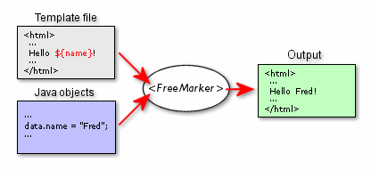

FreeMarker is a template engine: a generic tool to generate text output (anything from HTML to autogenerated source code) based on templates. It's a Java package, a class library for Java programmers. It's not an application for end-users in itself, but something that programmers can embed into their products.
FreeMarker is designed to be practical for the generation of HTML Web pages, particularly by servlet-based applications following the MVC (Model View Controller) pattern. The idea behind using the MVC pattern for dynamic Web pages is that you separate the designers (HTML authors) from the programmers. Everybody works on what they are good at. Designers can change the appearance of a page without programmers having to change or recompile code, because the application logic (Java programs) and page design (FreeMarker templates) are separated. Templates do not become polluted with complex program fragments. This separation is useful even for projects where the programmer and the HTML page author is the same person, since it helps to keep the application clear and easily maintainable.
Although FreeMarker has some programming capabilities, it is not a full-blown programming language like PHP. Instead, Java programs prepare the data to be displayed (like issue SQL queries), and FreeMarker just generates textual pages that display the prepared data using templates.
FreeMarker is not a Web application framework. It is suitable as a component in a Web application framework, but the FreeMarker engine itself knows nothing about HTTP or servlets. It simply generates text. As such, it is perfectly usable in non-web application environments as well. Note, however, that we provide out-of-the-box solutions for using FreeMarker as the view component of Model 2 frameworks such as Struts.
FreeMarker is Free, released under a BSD-style license. It is OSI Certified Open Source Software. OSI Certified is a certification mark of the Open Source Initiative.
If you are a ...
designer, then you should read the Template Author's Guide and then you can look into the Reference section on an as-needed basis for more specific details.
programmer, then you should read the Template Author's Guide guide first, then the Programmer's Guide and then you can look into the Reference section on an as-needed basis for more specific details.
Variable names, template fragments, Java class names, etc. are written like this: foo.
If something should be replaced with a concrete value then it is written in italics, as follows: Hello yourName!.
Template examples are written like this:
| |||
Data-model examples are written like this:
| |||
Output examples are written like this:
| |||
Program examples are written like this:
| |||
In chapters written for both designers and programmers fragments addressed to programmers are written like this: This is for programmers only.
New terms are emphasized like this: some new term
For the latest version of FreeMarker and to subscribe to the mailing lists visit the FreeMarker homepage: http://freemarker.org
If you need help or you have suggestions, use the mailing lists (mail archives can be searched without subscription) or the Web based forums. If you want to report a bug, use the Web based bug tracker, or the mailing lists. To find all of these visit http://freemarker.org. Also, note that we have a FAQ and index; use them.